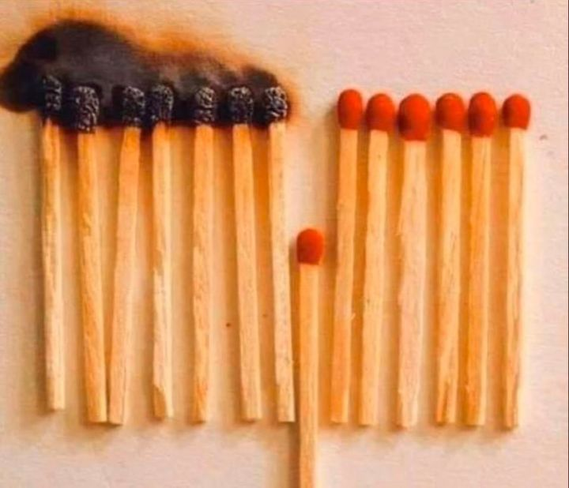

Viikon kuumat linkit
Linkkejä matkan varrelta... hyvää viikonloppua!
“In bear markets, stocks return to their rightful owners.” - J.P. Morgan
Aloitetaan parilla otteella Howard Marksin sijoittajakirjeestä alkuvuodesta 2016: “One of the most notable behavioral traits among investors is their tendency to overlook negatives or understate their significance for a while, and then eventually to capitulate and overreact to them on the downside.” “Especially during downdrafts, many investors impute intelligence to the market and look to it to tell them what’s going on and what to do about it. This is one of the biggest mistakes you can make. As Ben Graham pointed out, the day-to-day market isn’t a fundamental analyst; it’s a barometer of investor sentiment. You just can’t take it too seriously. Market participants have limited insight into what’s really happening in terms of fundamentals, and any intelligence that could be behind their buys and sells is obscured by their emotional swings.” Kirjeessä on paljon hyviä oppeja nykymarkkinaan!
Perään pari vanhaa arkistosta: Miksi osakkeiden on pakko laskea? Miksi ne eivät voi aina vain nousta? Vaikka kuinka hyvältä se kuulostaakin, että osakkeet vain nousisivat eivätkä koskaan laskisi, olisi se kauhuskenaario. Jos riskiä ei olisi, olisivat osakkeet äärettömän hintaisia eikä mikään tuottaisi mitään.
Entä miksi kuplia syntyy? Sijoittajat, joilla on eri tavoitteet ja eri sijoitushorisontit joutuvat pelaamaan samalla pelikentällä - onhan vain yksi markkina. Jossain vaiheessa lyhyen sijoitushorisontin pelaajat ottavat vallan ja kuplia voi syntyä. Riskinä on, että pelin tiimellyksessä muidenkin sijoittajien omat tavoitteet hämärtyvät ja tehdään pitkän aikavälin päätöksiä lyhyen aikavälin tilanteiden mukaan.
Suuri haaste on omassa sijoitussuunnitelmassaan pitäytymisessä. Kurssien laskiessa media luukuttaa negatiivista uutista ja lietsoo paniikkia ja pörssiromahduksen hallitessa kahvipöytäkeskusteluja, on vaikea pitää omasta suunnitelmastaan kiinni. Ryhmäpainetta vastaan on yksin haastavaa tehdä toisin.
Optimismi ja pessimisti ampuvat aina yli laidan, koska tuo laita on nähtävillä vasta jälkikäteen. Romahduksen aikana kylvetään kuitenkin nousun siemen. Vaikka myrskyn silmässä ei siltä tunnu, hinnoitellaan riski paremmin markkinoille, joka mahdollistaa paremman tuotto-odotuksen tulevaisuudessa. Lopulta tästäkin selvitään.
Aina on hyvä opiskella historiaa. Tämä on totta etenkin tällaisina aikoina. Pandemia ei ole uusi asia. Vuosien 1918-19 espanjantauti lienee se isoin, joka ihmisillä on mielessä, kun arvioidaan koronan potentiaalia. Wikipedian mukaan se tappoi maailmassa 30-100m ihmistä ja Suomessa 25 tuhatta. Suurin osa kuolemista vaikuttaa tulleen muutaman kuukauden aikana. Taloudellisten vaikutusten on arvioitu jääneen varsin lyhytaikaisiksi. Lienee selvää, että Q2 ja Q3 tullaan näkemään taantuma. Se, saadaanko Q4:llä rivakka elpyminen, riippuu pandemian kestosta ja syvyydestä. Lisää historiallisista pandemioista ja niiden taloudellisista vaikutuksista täältä.
Mitä nykyisin pääosin teknologia- ja kuluttajayhtiöihin sijoittava, salkunhoitaja Gavin Baker teki vuosien 2000-01 ja 2008-09 romahduksissa. Mihin seikkoihin hän on oppinut kiinnittämään huomiota? Hyviä pointteja, kuten likviditeetillä ja vahvalla taseella on merkitystä; jos meinaat panikoida, panikoi aikaisin; tyhtiöiden johdoilla ei yleisesti ole sen parempaa näkemystä kuin muillakaan; kaikki ammutaan alas, viimeisenä defet; markkinat pohjaavat aina ennen fundaa; yleisesti kannattaa olla pidemmällä aikavälillä optimisti kuin pessimisti. Ja myös ennustus: mahdolliset bailoutit ovat tällä kertaa vähemmän suosiollisia osakkeenomistajille kuin 2008-09.
Koronasta yksi parhaista kirjoituksista mihin törmännyt. Peräänkuuluttaa päättäjiltä ripeyttä ennaltaehkäiseviin toimiin. Tekee selväksi sen, minkä jo varmasti useimmat tietävät, että varsinaisia tapauksia on merkittävästi enemmän kuin luvut kertovat. Sosiaalisen kanssakäymisen lopettaminen on ainoa keino ehkäistä taudin leviämistä. Lopulta kyse on matematiikasta: kukin lisäpäivä, joka toimien kanssa viivästellään, luo 40% lisää tapauksia. Ja jossain vaiheessa se alkaa rasittaa terveydenhuoltojärjestelmään. Tämän on mallinnettu aiheuttavan jopa 10-kertaa suuremman kuolleiden osuuden, kuin niillä mailla, jotka eivät ole aikailleet.
Podcastit:
Lisää keskustelua koronan vakavuudesta ja toimista, joita on tehty ja joita tulisi tehdä. Esimerkiksi sellaisiin toimiin kuin joihin Kiinassa lähdettiin, tuskin tullaan länsimaissa tekemään. Siksi isomman leviämisen uhkaa ei voi sulkea pois. Myös se, että lentojen estämisellä ei tutkimusten mukaan ole pystytty estämään taudin leviämistä, ainoastaan hidastamaan.
Öljyssä nähtiin historiallinen romahdus alkuviikosta. Hyvää taustaa kysyntä/tarjonta -tilanteesta ja OPEC+ jäsenmaiden välisestä pelistä, jotka lopulta johtivat romahdukseen. Mitkä öljysektorin yhtiöt selviävät ja miten niitä kannattaisi lähteä etsimään. Ainakaan kirja-arvon tai vain viimeisimmän vuoden kassavirran perusteella.
Viikon kuva:
Ennen kuin valtiovoimin määrätään karenssiin, kukin voi omilla toimin vaikuttaa taudin leviämiseen. Siitä havainnollistava kuva. Jos pitää huolen, ettei itse saa tautia pitää niin itsensä kunnossa, kuin myös katkaisee taudin leviämisen ketjun.
